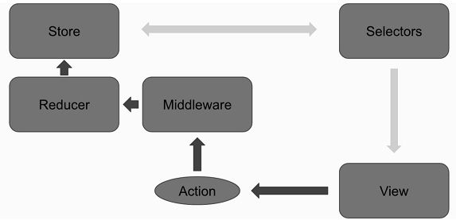

Lakeshore Market: E-commerce on-campus
Introduction
AlertApp is a cross-platform app written using react native through which various student organizations or individuals can send out alerts for events to students who register for an account using their LUC email address. The app is not only limited to student organizations and students. Campus safety or the university can issue out warnings or notify students of dangerous weather conditions. As such, the app serves as a unified event management system for events ranging from social events, academic-related events or safety-related concerns. Users can subscribe to events or be added to certain events. Once a user decides on an event to subscribe to, they can keep track of it and manage it through their My Events List.
My team and I came up with the idea because we thought it would be a great way to help people connect with the community around them by creating an opportunity for students to be able to view all the available events happening around campus. The project seemed intriguing because of its possible use cases by campus organizations and authorities. For example, Campus Safety would be able to send out emergency alerts, while the DOP (Department of Programming) could send out events such as the current movie being shown on campus, fundraisers, and other sorts of activities. Professors could also use this app to notify students of class cancellations, classroom changes, assignment changes, or notify students of any exam changes. Users can modify how inclusive they want the event to be by tailoring it to the appropriate audience.
Design Specifications and Considerations
The app was built using React Native. At a high-level, our goal was to deliver a functional app with a well-designed user experience. At a slightly lower level the goal was to architect the app in such a way as to maximize its scalability. This was achieved by using a handful of third party libraries along with React Native and good software design using a high level of abstraction to drive the application state management. The primary third-party libraries used were Immutable, Normalizr, React-native-router-flux, React-redux, Redux, Redux-persist, Redux-saga and Reselect. The client-side application architecture is diagramed as follows:
The application has two distinct layers. The business logic layer and the view layer. The view layer is a react.js style hierarchical component structure. The business logic layer encapsulates the store tree, entity definitions, and selectors. The data itself is based on a first order field abstraction that has a key, category, subcategory, and type at the minimum. The type property of a field is used to determine what type formatter to use for displaying the data. For example, a time/unix type will convert a Unix timestamp to a human readable date. A collection of fields is defined as an entity which can have either a parent or child entry. The entity definitions are used to normalize the data into an object graph.
The entire application is instantiated through factory methods. One for the React Native view layer and a few for the business logic layer. The view layer factory takes in a platform parameter (being iOS or Android) to determine what, if any, variations would need to be accounted for between native builds. The business logic layer is instantiated using an es6 module that defines the sublevel stores (some built through factories, like the records store, and others are specific one-offs), es6 module defined by a factory to build the object graph definition, and a store configuration factory that builds the store tree of the state of the application.
For the User Interface we wanted a clean, well refined interface. We chose a flat color scheme with slight color contrast to create an attractive color scheme that draws in users. A tab bar and sub-tab bar were used for navigation allowing easy escape hatches if a user gets confused.
Testing and Iterative Design
The application was built in two phases: business layer phase, and view layer phase. The business layer phase involved setting up the factories to drive instantiating the business layer of the application. The view layer phase involved designing the user interface, and developing said interface. The business layer is designed to be entirely separate from the view layer. As a result, it can have its own comprehensive unit test suite. Very limited unit tests were written for the project because we focused on application functionality. Our development process was extremely agile because we had to be testing and exploring modern technologies. As a result, not a lot of time was left for writing the unit tests. If we continue with this application to a production ready-state, writing the unit tests would be the next step.
Limitations and Constraints
We encountered few constraints while developing our application. The only major one was very major. In the React Native version we started with the React Native Polyfill for es6 did not work for es6 Symbols when transpiling to native Android applications. This prevented us from focusing on the android build of the application. Instead we focused on the iOS build.